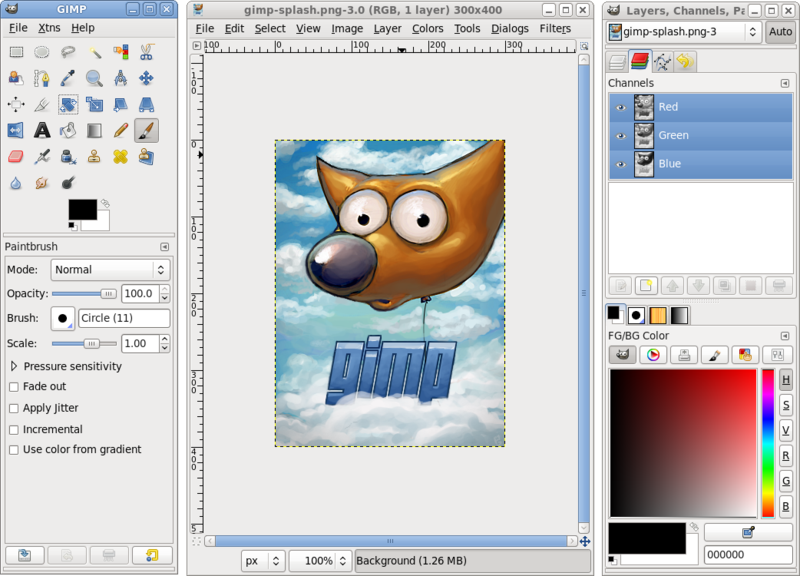
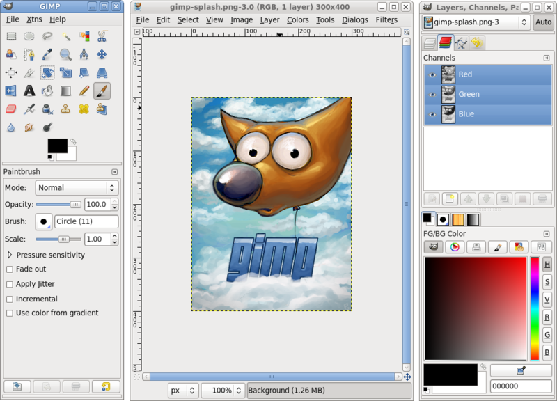

GIMP
El GIMP és un programa de distribució lliure, extremadament potent i versàtil, adequat per a tasques com ara retoc fotogràfic o creació i disseny d'imatges. Es pot utilitzar com a simple programa de dibuix, com a programa de retoc fotogràfic professional, com a sistema de processament massiu en línia, com a dissenyador massiu d'imatges de producció, com a convertidor de formats gràfics, etc. Disponible per a Linux, Windows i Mac. 
